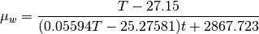

electrochem¶
-
thermosteam.functors.electrochem.Laliberte_water_viscosity(T)[source]¶ Return the viscosity of a water (Pa*s) at arbitrary temperatures (K) using the form proposed by [1].

Notes
Original source or pure water viscosity is not cited. No temperature range is given for this equation.
References
- 1
Laliberte, Marc. “A Model for Calculating the Heat Capacity of Aqueous Solutions, with Updated Density and Viscosity Data.” Journal of Chemical & Engineering Data 54, no. 6 (June 11, 2009): 1725-60. doi:10.1021/je8008123
-
class
thermosteam.functors.electrochem.McCleskey_parameters(Formula, lambda_coeffs, A_coeffs, B, multiplier)¶ -
property
A_coeffs¶ Alias for field number 2
-
property
B¶ Alias for field number 3
-
property
Formula¶ Alias for field number 0
-
property
lambda_coeffs¶ Alias for field number 1
-
property
multiplier¶ Alias for field number 4
-
property
-
thermosteam.functors.electrochem.conductivity(CASRN)[source]¶ This function handles the retrieval of a chemical’s conductivity. Lookup is based on CASRNs.
Function has data for approximately 100 chemicals.
- Parameters
- CASRNstring
CASRN [-]
- Returns
- kappafloat
Electrical conductivity of the fluid, [S/m]
- Tfloat, only returned if full_info == True
Temperature at which conductivity measurement was made
Notes
Only one source is available in this function. It is:
‘LANGE_COND’ which is from Lange’s Handbook, Table 8.34 Electrical
Conductivity of Various Pure Liquids’, a compillation of data in [1].
References
- 1
Speight, James. Lange’s Handbook of Chemistry. 16 edition. McGraw-Hill Professional, 2005.
Examples
>>> conductivity('7732-18-5') (4e-06, 291.15)